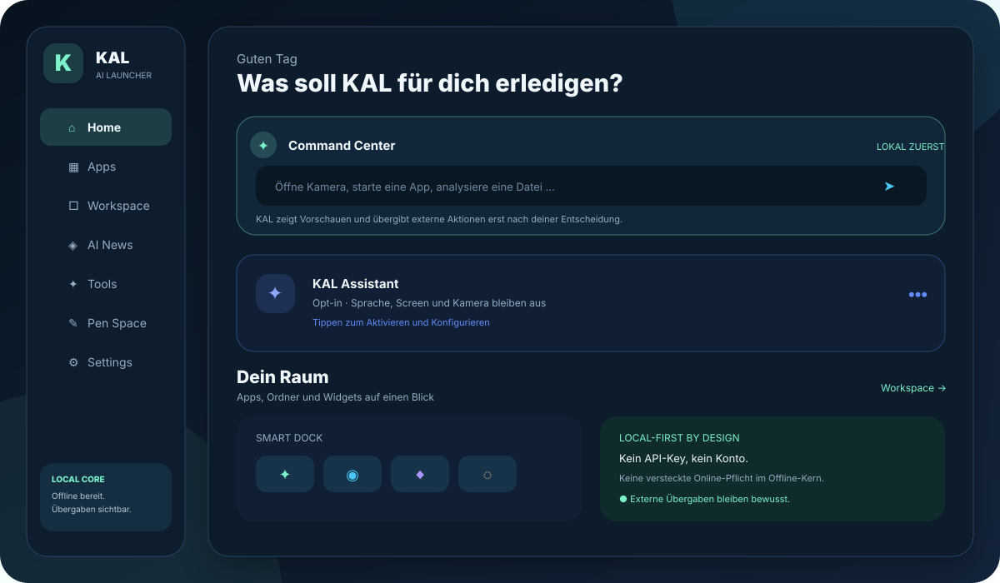
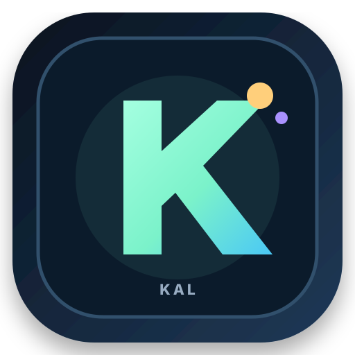
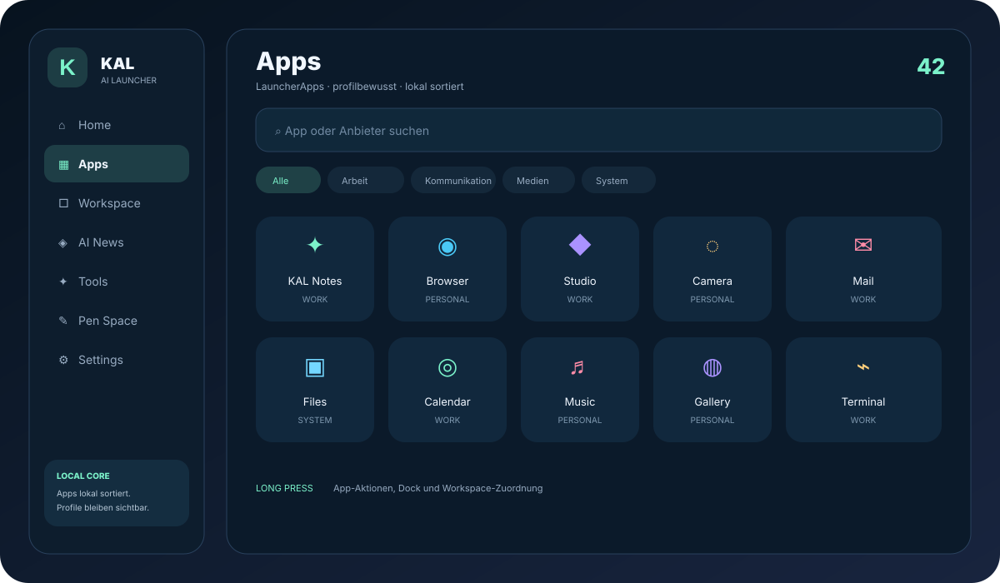
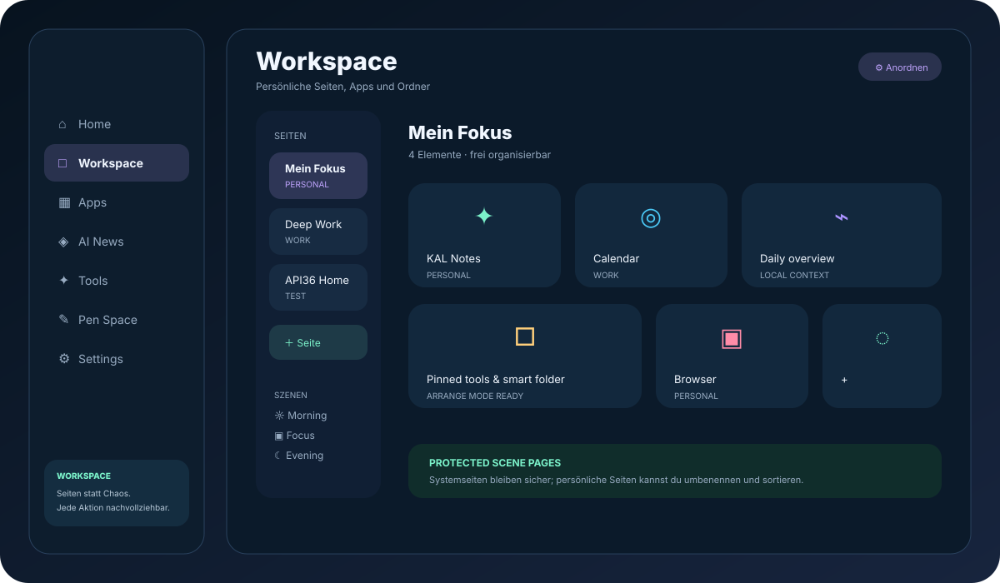
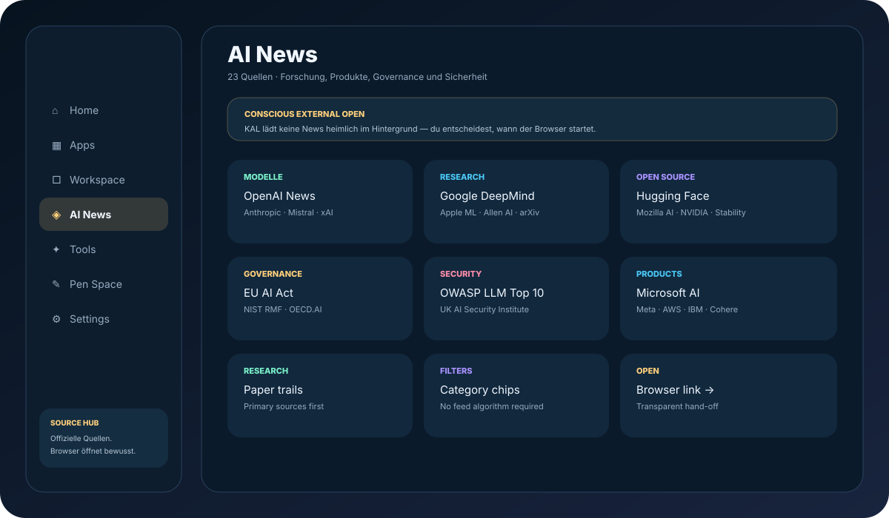
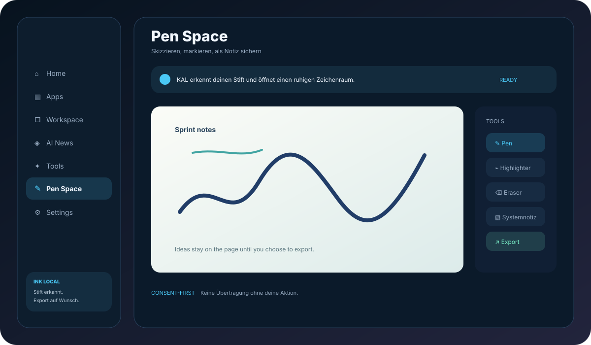
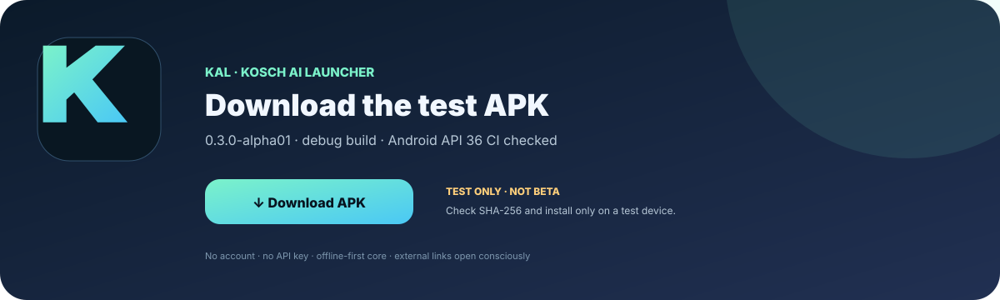

✦
Command Center
A local command entry for app launches, system routes, files and assistant hand-off.
Ein lokaler Einstieg für App-Starts, Systemwege, Dateien und die bewusste Assistant-Übergabe.
KAL is a unified, local-first launcher shell for people who need a calm command center, real workspaces and visible boundaries around assistant capabilities.
KAL ist eine einheitliche, local-first Launcher-Shell für Menschen, die ein ruhiges Command Center, echte Workspaces und sichtbare Grenzen für Assistenzfunktionen brauchen.


The KAL mark is the Android app icon, launcher logo and documentation signature: a focused K inside a deep, quiet surface.
Das KAL-Zeichen ist Android-App-Icon, Launcher-Logo und Dokumentationssignatur: ein fokussiertes K in einer tiefen, ruhigen Oberfläche.
KAL keeps the everyday launcher path simple while making power features discoverable instead of scattered across competing home modes.
KAL hält den alltäglichen Launcher-Weg einfach und macht Power-Funktionen auffindbar, statt sie über konkurrierende Homes zu verteilen.
A local command entry for app launches, system routes, files and assistant hand-off.
Ein lokaler Einstieg für App-Starts, Systemwege, Dateien und die bewusste Assistant-Übergabe.
Persistent pages, folders and movable items with an explicit arrange mode.
Persistente Seiten, Ordner und verschiebbare Elemente mit einem klaren Anordnen-Modus.
A curated source hub for research, products, governance and security. External links open visibly.
Ein Quellenhub für Forschung, Produkte, Governance und Sicherheit. Externe Links öffnen sichtbar.
Assistant, screen awareness and camera awareness stay off until you opt in.
Assistant, Screen Awareness und Camera Awareness bleiben aus, bis du sie aktiv freigibst.
A local vector-ink surface for stylus notes, system notes and optional export.
Eine lokale Vektor-Ink-Fläche für Stiftnotizen, Systemnotizen und optionalen Export.
LauncherApps, widgets, profiles, HOME selection and system safety exits remain reachable.
LauncherApps, Widgets, Profile, HOME-Auswahl und Sicherheitsausgänge bleiben erreichbar.
These are product UI previews, not decorative concept art. They document the current 0.3 alpha direction.
Das sind UI-Produktansichten und keine reine Konzeptgrafik. Sie dokumentieren die aktuelle 0.3-Alpha-Richtung.





The workflow page always points to the newest retained APK and SHA-256 checksum. GitHub may require sign-in to download Actions artifacts.
Die Workflow-Seite zeigt immer die neueste aufbewahrte APK und die SHA-256-Prüfsumme. Für Actions-Artefakte kann GitHub eine Anmeldung verlangen.